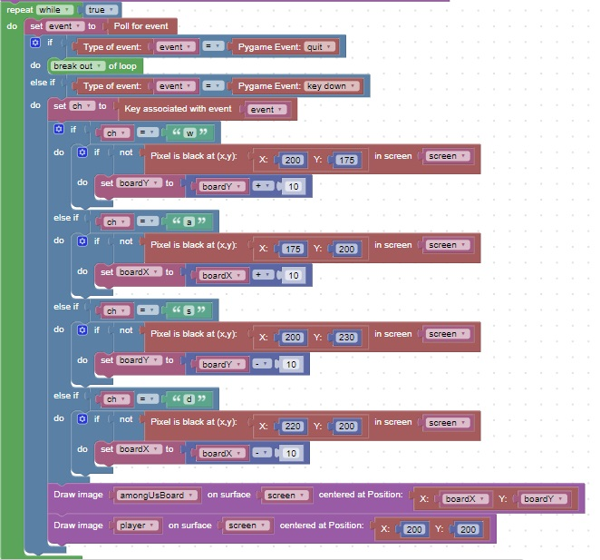

<h1>Avoiding the Black areas</h1>
This code will move the board based on the player press of wasd.<br>
It will also not allow the player to enter a black area<br>
<br>
<h2>Check your understanding</h2>
What happens if you draw the player first and then the background?<br>
<hr>
<center></center>